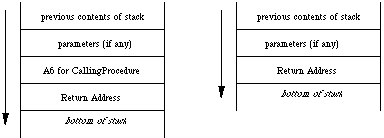

|
|
This Technical Note talks about nested procedures and PROCEDURE
parameters in Pascal and what to do when converting them into C or C++.
[Feb 01 1990]
|
Introduction
Pascal and C offer many of the same features, but there are some differences.
These differences make converting between languages or calling libraries
written in one language from the other difficult sometimes. Two closely
associated features of Pascal that C does not offer are nested procedures and
PROCEDURE parameters. Since these two features are commonly used when
programming with MacApp, the problem of implementing them in C++ is a common
one.
Back to top
How Pascal Implements Nested Procedures
Pascal lets programmers nest procedures within each other. Doing so allows one
to limit the scope of local variables, as well as allow multiple procedures
access to the same set of dynamically created variables.
Let's take a look at the following bit o' code:
PROCEDURE CallBack;
{ Outer level procedure }
BEGIN
END;
PROCEDURE CallingProcedure;
{ Outer level procedure }
VAR
aVar: integer;
PROCEDURE NestedCallBack;
{ Nested procedure - can access "aVar" }
VAR
anotherVar: integer;
BEGIN {NestedCallBack }
aVar := 1;
anotherVar := 2;
END; {NestedCallBack }
BEGIN {CallingProcedure }
CallBack;
NestedCallBack;
|
This code shows three Pascal procedures: CallingProcedure,
CallBack, and NestedCallBack. NestedCallBack is the
nested procedure, which means that it can access the local variables of the
procedure it is nested within, namely, CallingProcedure.
The method used to allow NestedCallBack to access its host procedure's
local variables is not so obvious and involves a little hack. As you may know,
local variables are created on the stack when a procedure is entered, and the
680x0 register A6 is initialized to point to them. Fine, but this
leads to a little conflict within NestedCallBack. It needs to use
A6 to point to its own local variables (e.g., anotherVar), so
how does it access its host procedure's local variables?
The answer, logically enough, is that it uses another register for this
purpose. When NestedCallBack is called from its host procedure, the
host's A6 is pushed onto the stack after any and all formal parameters
have been pushed on, but before the JSR is performed (this extra
parameter is often referred to as the "static link"). As
NestedCallBack is being entered, you have a stack similar to that in
Figure 1. By comparison, Figure 2 shows what the stack would look like if you
made a normal call to a procedure on the outer level, such as the procedure
shown above named CallBack.

Figure 1. Call to NestedCallBack
Figure 2.Call to CallBack
Each procedure knows at compile time whether it is nested or not and adjusts
itself accordingly. If it turns out that a procedure is nested, then it is
compiled as if you had declared an extra parameter at the end of the formal
parameter list, one that held the value of the host's A6. Pascal then
uses this parameter for fetching the local variables of the nested procedure's
host. It pulls this parameter off of the stack just like any other parameter,
sticks it into a handy register, and uses it as a base address to the host's
local variables, just as it uses A6 as the base address to its own
locals.
Back to top
How Pascal Implements PROCEDURE Parameters
As seen in the previous section, nested procedures require a little help to get
themselves up and running. Specifically, they need an extra parameter called a
static link. You've seen one way in which Pascal provides support for this
parameter. In this section, you see another important case.
There are many Toolbox routines that require a pointer to a procedure being
passed to them as a parameter. These procedures are called "callback"
procedures, because the Toolbox makes a call back to those procedures to
perform some application-specific function. An example of this type of routine
would be the Control Manager routine _TrackControl, which requires a
callback procedure called actionProc.
By now, you should see why you cannot pass the address of a nested procedure to
such a Toolbox routine. Nested procedures require that they be passed the
static link parameter so that they can access their host variables. The
Toolbox doesn't support this convention, so it cannot pass the required static
link to the nested routine.
While the Toolbox doesn't support the nested procedure convention, Pascal
itself does support a method whereby you can pass around all the information
necessary to implement a callback procedure as a nested procedure.
Syntactically, this is done by including a full procedure heading in the list
of formal parameters a procedure takes. An example of such could look like the
following:
PROCEDURE SomeProcedure(
PROCEDURE CallBackProc(i:integer);
iterForward: BOOLEAN);
BEGIN
...
CallBackProc(5);
...
|
SomeProcedure takes two parameters. The first is a PROCEDURE
parameter that refers to a routine that takes a parameter itself, namely, a
single integer. In addition, SomeProcedure takes a BOOLEAN
called iterForward as a second parameter. You would call
SomeProcedure with something like the following:
PROCEDURE MyCallingProcedure;
PROCEDURE MyCallBackProcedure(i: integer);
BEGIN { of MyCallBackProcedure }
< mumble >;
END;
BEGIN { of MyCallingProcedure }
SomeProcedure(MyCallBackProcedure, TRUE);
|
Through the use of the PROCEDURE parameter, you can invoke the
callback procedure using a natural Pascal syntax. In the
SomeProcedure example, the statement CallBackProc(5) causes
MyCallBackProcedure to be called with a value of five. Not only can
you just invoke the procedure by entering the name of the PROCEDURE
variable, but you can pass parameters to it with full Pascal typechecking
invoked. In this case, Pascal ensures that when you call
CallBackProc, you also pass a single integer to it.
PROCEDURE parameters also give the support for nested procedures for which
you are looking. When a PROCEDURE parameter is passed on the stack,
two components are used to represent it. The first is a pointer to the actual
procedure. The second is the static link. Therefore, you can think of a
PROCEDURE parameter as being represented by the following record:
TYPE
ProcedureParameter = RECORD
procPtr: Ptr;
staticLink: Ptr;
|
When you pass a PROCEDURE parameter to a destination procedure, both
of these components are pushed onto the stack as LONG values (four
bytes each). When it comes time for the destination procedure to invoke the
callback, any necessary parameters for the callback are placed onto the stack,
followed by the staticLink value. Then the routine specified by
procPtr is called.
The step where the destination procedure pushes the static link onto the stack
is important and should be examined more closely. Specifically, how do you
know that a static link parameter is necessary at this point? After all,
SomeProcedure simply declares that it takes a PROCEDURE as a
parameter; it doesn't differentiate between nested and non-nested procedures.
But, as you saw in the first section, these two kinds of procedures are called
differently. How do you know if the the static link passed to you needs to be
pushed onto the stack for the callback procedure?
The answer is that SomeProcedure receives a special value for the
static link parameter for non-nested procedures. If the callback procedure is
at the outer level, SomeProcedure receives NIL for the value
of the static link. When Pascal compiles the commands that invoke
PROCEDURE parameters, it generates code that checks the static link.
If it is NIL, it doesn't push it onto the stack. If it is not
NIL, then you are calling a nested procedure, and must push the static
link onto the stack.
So, how do you utilize nested procedures and PROCEDURE parameters in C
or C++? Obviously, you cannot--at least not directly. C and C++ don't support
them. At this point, you might as well just give up and use Pascal; you always
said C++ was highly overrated anyway.
There are two scenarios to examine:
- A Pascal routine calls your C++ routine, passing a
PROCEDURE parameter to another Pascal routine you have to call.
- Your C++ routine calls a Pascal routine expecting a
PROCEDURE parameter, which you have implemented in C++.
The rest of the Note looks at both of these cases.
Back to top
Pascal to C++ to Pascal
MacApp supports an object inspector, which it implements by calling a
Fields method common to all descendants of TObject. Each
class you define should override this method so that MacApp can find out about
your class's fields. Such a method definition would look like the following:
PROCEDURE TJustCommand.Fields(
PROCEDURE DoToField(fieldName: Str255;
fieldAddr: Ptr;
fieldType: INTEGER)); OVERRIDE;
BEGIN
DoToField('TJustCommand', NIL, bClass);
DoToField('fTEView', @fTEView, bObject);
DoToField('fOldJust', @fOldJust, bInteger);
DoToField('fNewJust', @fNewJust, bInteger);
INHERITED Fields(DoToField);
|
You tell it the name of your class so that whatever routine is calling you
(usually MacApp's inspector or debugger) can identify the class it is
inspecting. Then, for each field in your class, you call the procedure passed
to you, giving it the three parameters it needs. Finally, you call your
superclass' Fields method so that it can identify its name and
fields.
When your Fields method is called, the DoToField parameter
appears on the stack as a pointer to the procedure you are supposed to call, as
well as the static link value it needs. When you actually call
DoToField, the necessary parameters are first pushed onto the stack
(i.e., fieldName, fieldAddr, and fieldType). Pascal
then adds some code that makes a determination based on the value of the static
link parameter. If it is non-zero, then you are calling a nested procedure and
need to pass back the static link back on the stack. If static link is zero,
then you are not calling a nested procedure and don't need to pass that static
link back.
Pascal handles all of this for you transparently. This ease in Pascal makes
the process of writing a similar routine in C or C++ that much more difficult,
as that process has been hidden from us.
There is no way in C or C++ to pass a variable number of parameters in one
statement. In other words, you cannot do something like the
following:
DoToField("\pTJustCommand", nil, bClass,
StaticLink ? StaticLink : void); /* No Workie */
|
That would be too easy. Instead, you must use some inline glue that prepares
the stack for you. This inline procedure accepts the three parameters you see
in the Pascal version, as well as both components of the PROCEDURE
parameter (i.e., the procedure pointer and static link). The glue looks at the
static link value and removes it from the stack if it is zero and, thus, not
needed.
One solution is as follows:
typedef pascal void (*FieldProcPtr) (
StringPtr fieldName, Ptr fieldAddr,
short fieldType, void *DoToField_StaticLink);
pascal void CallDoToField(StringPtr, Ptr, short, void *, FieldProcPtr)
= {
0x205F, // MOVEA.L (A7)+,A0 ; get the DoToField pointer
0x4A97, // TST.L (A7) ; check the StaticLink
0x6602, // BNE.S *+$0004 ; if non-zero, keep it in
0x588F, // ADDQ.L #$4,A7 ; if zero, pull it off
0x4E90 // JSR (A0) ; Call DoToField
};
pascal void TJustCommand::Fields(
FieldProcPtr DoToField,
void *DoToField_StaticLink) {
CallDoToField("\pTJustCommand", NULL, bClass,
DoToField_StaticLink, DoToField);
CallDoToField("\pfTEView", (Ptr) &fTEView, bObject,
DoToField_StaticLink, DoToField);
CallDoToField("\pfOldJust", (Ptr) &fOldJust, bInteger,
DoToField_StaticLink, DoToField);
CallDoToField("\pfNewJust", (Ptr) &fNewJust, bInteger,
DoToField_StaticLink, DoToField);
|
Back to top
C++ to Pascal to C++
Now look at another case that occurs often in MacApp. This is where your C++
routine calls a MacApp procedure that needs a PROCEDURE reference back
to one of your own routines. For instance, MacApp has a class called
TList that allows you to maintain a list of objects. This class has a
method called Each that allows you to perform some operation on each
object in the list. MacApp takes care of iterating over all of the objects and
calls a routine you pass to it for each one.
For this example, you have a list of objects stored in a TList and you
want to pass the Graze message to all of them. At the same time, you
want to keep track of how many grazed so much that they fell off a cliff during
the process. If the number of objects grazing off a cliff is greater than some
threshold, then you call _SysBeep. You could use the following
procedures to accomplish this in Object Pascal:
VAR
myList: TList;
PROCEDURE TMyApplication.GrazeAll;
VAR
offTheCliff: integer;
PROCEDURE DoGraze(theObject: TObject);
BEGIN
TGrazer(theObject).Graze;
IF TGrazer(theObject).GrazedOffTheCliff THEN
offTheCliff := offThecliff + 1;
IF offTheCliff > SELF.fCliffThreshhold THEN
ApplicationBeep;
END;
BEGIN
offTheCliff := 0;
myGrazerList.Each(DoGraze);
|
You use a nested procedure so that DoGraze can access the local
variable offTheCliff. This allows you to use a variable that has
limited scope and that is created dynamically so that you don't have to
allocate a global variable. Also, since DoGraze is embedded within a
TMyApplication method, you have access to the this symbol
(this is the equivalent to SELF in Object Pascal).
Therefore, the problem for C++ programmers here is that there is no implicit
support for getting access to local variables, such as offTheCliff, as
well as the reference to the correct object through this. So what's
the alternative for C++ programmers in a case like this?
First, let's take a quick look at how the Each method is declared:
Object Pascal
TList = OBJECT (TDynamicArray)
...
PROCEDURE TList.Each(PROCEDURE DoToItem(item: TObject));
...
|
C++
class TList : public TDynamicArray {
public:
...
virtual pascal void Each(pascal void (*DoToItem)(
TObject *item,
void *DoToItem_StaticLink),
void *DoToItem_StaticLink);
...
|
As you can see, the two components of the PROCEDURE parameter have to
be declared explicitly in C++. Because of this, you can come up with four
different solutions to the problem, and all of them hinge on being creative
with what you pass for the static link parameter.
- Case: You need access to
this, but don't need to access any local variables. Pass this in DoToItem_StaticLink directly.
- Case: You need access to a single local variable, but not
SELF. Pass the reference to that local variable in DoToItem_StaticLink.
- Case: You need access to multiple amounts of information, including more than one local variable and
this. Pass a pointer to a struct that contains this information.
- Case: You don't need access to anything from the host procedure (including local variables and
this). Pass a NIL for the static link.
Now to look at each of these in more depth.
Pass this in DoToItem_StaticLink Directly
This is the approach where you would pass this as the
DoToItem_StaticLink value. You would want to do this if you needed to
access your object, but didn't need to access any local variables. Here's what
some C++ code would look like using this method. You pass this as the
static link parameter and convert it back into an object reference in your
callback procedure.
pascal void DoGraze(TObject* item, void* staticLink) {
TMyApplication *self;
self = (TMyApplication *) staticLink;
self->DoSomethingElse();
((TGrazer *)item)->Graze();
}
pascal void TMyApplication::GrazeAll() {
myGrazerList->Each(DoGraze, this);
|
Pass the Reference to a Single Local Variable in DoToItem_StaticLink
You would use this method if all you had to do was access a local variable of
your host procedure. Getting to your local variable is now just a matter of
dereferencing the staticLink parameter.
pascal void CountGrazers(TObject* item, void* staticLink) {
int *grazerCountPtr = (int *) staticLink;
++(*grazerCountPtr);
}
pascal void TMyApplication::GrazeAll() {
int grazerCount = 0;
myGrazerList->Each(CountGrazers, &grazerCount);
|
Pass a Pointer to a struct in DoToItem_StaticLink
If you need to pass multiple amounts of information, such as more than one
local variable, possibly including a reference to this, you can do so
with a struct. This struct would hold all the local
variables you need to pass to the callback routine. You would declare an
instance of this struct in your local parameter list and pass a
pointer to it as the static link. In your callback procedure, you would coerce
the staticLink variable back into a Pointer to this
struct, and then get all the information you need.
An example of this could look as follows:
typedef struct {
int offTheCliff;
TMyApplication *self;
} localVars;
pascal void DoGraze(TObject* item, void* staticLink) {
localVars *hostLocals = (localVars *) staticLink;
((TGrazer *)item)->Graze();
if ((TGrazer *)item->GrazedOffTheCliff()) {
++(hostLocals->offTheCliff);
}
if (hostLocals->offTheCliff >
hostLocals->self->fCliffThreshhold) {
ApplicationBeep();
}
}
pascal void TMyApplication::GrazeAll() {
localVars myLocals;
myLocals.self = this;
myLocals.offTheCliff = 0;
myGrazerList->Each(DoGraze, &myLocals);
|
Pass a Zero for the Static Link
You would do this in situations where you can get by with the formal parameters
that are given to you and don't need to access any of your host's local
variables or the object reference. Since passing a zero means "don't push a
static link onto the stack" in this convention, you have to adjust the
parameter list of your callback DoGraze accordingly.
typedef pascal void (* EachProcType)(TObject *, void *);
pascal void DoGraze(TObject* item) {
((TGrazer *)item)->Graze();
}
pascal void TMyApplication::GrazeAll() {
myGrazerList->Each((EachProcType)DoGraze, nil);
|
Which of these methods you use is up to you.
Back to top References
MPW 3.0 Pascal Reference, Chapter 8, pp. 145-147
Your dentist, twice a year
Back to top Downloadables
|

|
Acrobat version of this Note (K).
|
Download
|
|